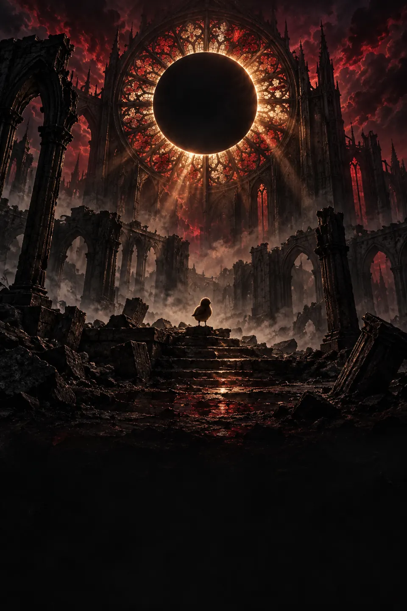

El Corral
Eclipse of the Tilted
un juego de Corral Studiosa Corral Studios game
Derrotar a tus amigos puede ser la única forma de salvarlos.Defeating your friends may be the only way to save them.
Síguenos en WhatsAppFollow us on WhatsAppEl Corral ha caídoThe Corral has fallen
Lo que estamos construyendoWhat we are building
El juego está en desarrollo; algunas características pueden cambiar.The game is in development; some features may change.
Almas heredadasInherited souls
Los enemigos derrotados te dejan sus poderes.Defeated enemies leave you their powers.
Medidor de TiltTilt meter
Más poder a cambio de más riesgo.More power in exchange for more risk.
Santuarios de DiscordDiscord Sanctuaries
Descansa, guarda y vuelve a intentarlo.Rest, save and try again.
Recupera tus LPRecover your LP
Si caes, vuelve al lugar donde perdiste para recuperarlos.If you fall, go back to where you lost them to get them back.
Jefes con varias fasesMulti-phase bosses
Inspirados en los campeones favoritos de cada Gallo.Inspired by each Gallo's favorite champions.
Decisiones y finalesChoices and endings
No todos los Gallos son enemigos: rescata, recluta o enfrenta.Not every Gallo is an enemy: rescue, recruit or fight.
CapturasScreenshots
JugarPlay
Historial de versionesVersion history
Cómo jugarHow to play
ControlesControls
| AcciónAction | TecladoKeyboard | ControlController | TáctilTouch |
|---|---|---|---|
| MoverseMove | ← → / A D | Palanca o crucetaStick or D-pad | CrucetaD-pad |
| SaltarJump | Espacio / K | A | Saltar |
| AtacarAttack | J / X | X | Golpe |
| EsquivarDodge | Shift / L | B | Esquivar |
| Usar almaUse soul | U / C | Y | Alma |
Preguntas frecuentesFAQ
CréditosCredits
- Un juego deA game by
- Corral Studios
- ConWith
- Los Gallos Sin Planes (Cake & Others)
- Ciberseguridad y diseñoCybersecurity and design
- divilight
- MotorEngine
- Godot Engine